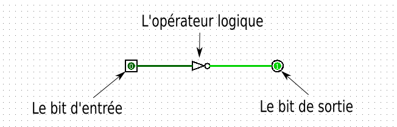
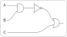

Activité#
Le processeur d’un ordinateur contient de très nombreux transistors qui sont des semi-conducteurs. Ils ont la particularité de laisser passer ou non le courant électrique.
En les associant, on crée des portes logiques qui vont modifier les courants électriques. Ces courants electriques sont représentés par des valeurs égales à \(0\) (pas de courant) et \(1\) (courant) appelés bits en informatique.
Nous allons réaliser des circuits logiques avec un logiciel. Chaque circuit est composé:
d’un ou plusieurs bits en entrée;
un seul bit de sortie;
un ou plusieurs opérateurs logiques;
de lien pour connecter les éléments.
Voici ci-dessous un exemple de circuit logique:
L’opérateur logique NOT#
L’opérateur logique NOT est représenté symboliquement par:
Créer un circuit logique composé de l’opérateur NOT, d’une entrée et d’une sortie.
En cliquant sur l’icône « main », vous pouvez modifier la valeur du bit d’entrée. Observer alors la valeur du bit de sortie.
On note
Ale bit d’entrée. Le bit de sortie se note alorsNOT(A). Compléter le tableau ci-dessous selon les valeurs prises par l’entréeA.table de vérité de NOT# A
NOT(A)
0
1
L’opérateur logique ET#
L’opérateur logique ET est représenté symboliquement par:
Créer un circuit comprenant 2 entrées binaires, une porte logique
ETet une sortie binaire.Modifier la valeur des bits d’entrée et observer la valeur du bit de sortie.
On note
AetBles bits d’entrée. Le bit de sortie se note alorsA ET B. Compléter la table ci-dessous:table de vérité de ET# A
B
A AND B
0
0
0
1
1
0
1
1
L’opérateur logique OU#
L’opérateur logique OU est représenté symboliquement par:
Créer un circuit comprenant 2 entrées binaires, une porte logique
OUet une sortie binaire.Modifier la valeur des bits d’entrée et observer la valeur du bit de sortie.
On note
AetBles bits d’entrée. Le bit de sortie se note alorsA OU B. Compléter la table ci-dessous:table de vérité de OU# A
B
A OR B
0
0
0
1
1
0
1
1
Expressions logiques#
Circuit logique 1
On veut créer un circuit avec trois entrées binaires A, B et C représentant l’expression logique A ET B OU C.
Créer un circuit logique associé à cette expression.
Modifier la valeur des bits d’entrée et observer la valeur du bit de sortie.
Construire un tableau contenant toutes les valeurs possibles en entrée et la valeur en sortie. On pourra insérer des colonnes pour des valeurs intermédiaires.
Circuit logique 2
On donne le circuit logique avec trois entrées binaires A, B et C.
{kind=link}
Reproduire ce circuit puis modifier la valeur des bits d’entrée et observer la valeur du bit de sortie.
Proposer une expression logique associée à ce circuit.
Construire un tableau contenant toutes les valeurs possibles en entrée et la valeur en sortie. On pourra insérer des colonnes pour des valeurs intermédiaires.